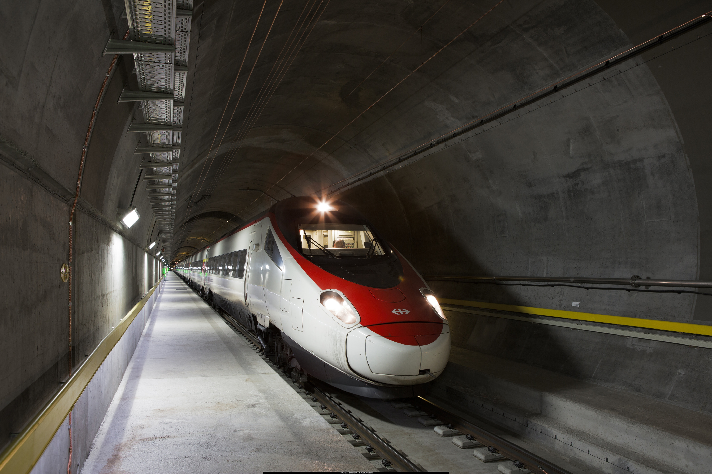

Knotenbahnhöfe der SBB unter der Lupe
Die Schweiz ist ein öV-Land und steht seit Jahrhunderten im Mittelpunkt der Nord-Süd-Achse Europas. Anhand von Verspätungsdaten der SBB soll die Problematik von sogenannten Knotenbahnhöfen, die eine direkte Nord-Süd-Verbindung besitzen, untersucht werden.

Story
Ausgangslage
Im Rahmen der Veranstaltung "übung Open Data" an der Universität Bern von Herr Dr. Matthias Stürmer setzen wir uns mit Visualisierungen von OpenData auseinander. Wir haben uns für die öffentlichen Daten der Open-Data-Plattform öV Schweiz entschieden.
In den Medien ist immer wieder zu lesen, die SBB kämpfe mit Verspätungen etc., auch verschiedene Open Data Apps / Visualisierungen befassen sich mit der Verspätungsthematik des öVs. Anhand der Verspätungsdaten wollen wir einen etwas anderen Aspekt dieser Thematik beleuchten und die Verspätungs-Problematik des Knotenbahnhofs Spiez untersuchen. Der Bahnhof Arth-Goldau wird als Vergleich verwendet um allfällige Gründe zu erkennen, was optimiert werden könnte. Die Kriterien für den Vergleichsbahnhof, hier Arth-Goldau, sind: geografische Lage, ähnliche Grösse des Bahnhofs und eine direkte Nord-Süd-Verbindung.
An dieser Stelle sei erwähnt, dass wir uns bei den Daten nur auf die Verspätungsdaten der SBB konzentrieren und nur Personenzügen berücksichtigen, der ganze Güterverkehr wurde nicht analysiert. Uns ist bewusst, dass die Zugverbindungen der BLS oder anderer regionaler Bahnunternehmen einen grossen Einfluss auf unseren ausgewählten Bahnhöfen haben. In unserer Analyse stehen jedoch die jeweiligen Hauptachsen der Knotenpunkte im Vordergrund, als Beispiel: Die BLS betreibt keine direkte Zugverbindung von Spiez nach Visp. Somit haben wir uns entschieden nur die Zugverbindungen der SBB zu berücksichtigen. Bei unserer Visualisierung haben wir festgelegt, dass eine Verbindung, die vorzeitig, pünktlich oder mit weniger als 3 Minuten Verspätung ankommt, pünktlich ist. Alle Verbindungen mit über 3 Minuten Verspätung gelten als verspätet. Mit dieser Ausgangslage haben wir uns ans Werk gemacht und eine geeignete Web-Applikation entwickelt.
Daten
In der Visualisierung unserer App wurden die IST-Daten der Open-Data-Plattform öV Schweiz verwendet. Diese Daten liegen in einem CSV-File bereit, in welchem jeweils ein einzelner Tag der schweizweiten Verbindungen aufgelistet ist. Ein Datensatz beinhaltet immer die Haltestelle, die Linien-ID, die Zugart und -nummer (z.B. IC1), die Ab- und Ankunftszeiten nach Zeitplan und die effektiven Ab- und Ankunftszeiten.
Für unsere Applikation mussten die Daten zuerst in eine geeignete Form gebracht werden. Dazu wurden aus dem gesamten CSV-File, welches rund 1'050'000 Datensätze beinhaltet, das Subset für Spiez und Arth-Goldau (ca. 200 Datensätze) gezogen. Dies wurde mit einer einfachen Javascript-Funktion gemacht. Da der Datensatz nur die Haltestelle beinhaltet, jedoch aber die Herkunft des Zuges nicht abgebildet ist, mussten wir dieses Mapping von Hand machen. Leider werden die Linien-IDs pro gefahrener Zug vergeben und nicht immer für die selbe Strecke (z.B. Thun-Spiez).
Die Daten wurden schliesslich als JSON-Files der Applikation hinzugefügt und können so schnell ausgelesen und verarbeitet werden.
Bedienungsanleitung der App
Auf der linken Seite ist der Bahnhof Spiez abgebildet, auf der rechten Seite der Bahnhof Arth-Goldau. Jeweils in der Mitte der Abbildung befinden sich unsere erwähnten Knotenbahnhöfe, diese sind über die Verbindungslinien mit den grösseren Ortschaften (jeweils 3), welche eine direkte Zugverbindung zu Spiez oder Arth-Goldau haben, verbunden.
Die Farbe der Verbindungslinie zeigt an, wieviel Züge aller ankommenden Züge Verspätung haben am Ankunftsbahnhof (in Prozent % ausgedrückt). Wenn die Farbe Grün ist, haben unter 3% aller ankommenden Züge Verspätung, die Farbe Orange bedeutet unter 10% aller Züge haben Verspätung, Rot steht für über 10% der Züge haben Verspätungen. Die Breite der Linien zeigt die relative Anzahl Züge zur Gesamtmenge an, viele Züge haben somit eine breitere Linie, weniger Züge eine dünnere Linie.
Fährt man mit seinem Cursor über die Verbindungslinien der Ortschaften erscheint ein Tooltip welches Ihnen die absolute Anzahl Züge anzeigt, sowie die relative Anzahl Verspätungen dieser Verbindung, in Prozent ausgedrückt.
Klicken Sie auf die Verbindungslinie öffnet sich ein Pop-Up Fenster mit einem Kreisdiagramm, dass Ihnen detailliertere Informationen zu den Verspätungen anzeigt. Sie sehen anhand des Kreisdiagramms, welcher Zug Typ (ICE, IC, EC, IR) die Verspätungen hatte. Auch hier, wenn Sie über das Kreisdiagramm mit Ihrem Cursor fahren, erscheint ein Tooltip mit den absoluten Zahlen.

Vorgehen
Anhand der Fragen, die wir uns gestellt haben und Schwierigkeiten die während des Entwicklungsprozesses aufgetaucht sind, zeigen wir hier unsere Vorgehensweise auf:
- Auswahl der zur Verfügung gestellten öffentlichen Daten: Open Data öV Schweiz
- Welche Informationen wollen wir aus den Daten holen: Da zurzeit (Frühlingssemester 2018) Verspätungen der SBB in den Medien wieder ein präsenteres Thema ist, entschieden wir uns für die Verspätungsdaten.
-
Welche Geschichte möchten wir mit unseren Daten erzählen, müssen wir Einschränkungen vornehmen:
Wir konzentrieren uns mit der Visualisierung auf zwei sogenannte "Knotenbahnhöfe". Zum einen befassen wir uns mit dem Bahnhof Spiez, der zweite Bahnhof ist Arth-Goldau. Nun wieso gerade diese zwei Bahnhöfe, zum einen wurde mit der Webseite www.puenktlichkeit.ch einen "guten" (Arth-Goldau) und einen "schlechteren" (Spiez) in Bezug auf die Ankunfts-Verspätungsdaten ausgesucht. Spiez, wie auch Arth-Goldau besitzen jeweils drei Hauptachsen zu grösseren Ortschaften. Beide Bahnhöfe sollen eine ähnliche Grösse aufweisen, Spiez besitzt fünf, Arth-Goldau sechs Perrongleise. Ausserdem besitzen beide Bahnhöfe besitzen eine direkte Verbindung von Norden nach Süden, Spiez nach Visp durch den Lötschberg-Basistunnel und Arth-Goldau nach Bellinzona durch den Gotthard-Basistunnel, beide Tunnels gehören zum NEAT-Konzept. Die Frage die sich uns nun stellt ist, können wir durch einen Vergleich zwischen den Bahnhöfen anhand der Ankunftsverspätungen mögliche Gründe für den "schlechteren" Bahnhof Spiez feststellen respektive welche Problematik weisen Knotenbahnhöfe auf? - In einem nächsten Schritt wurden die LinienID der jeweils drei Herkunftsorte bestimmt. Für den Bahnhof Spiez sind dies die Herkunftsorte: Interlaken, Visp und Thun, für Arth-Goldau sind dies: Zug, Luzern und Bellinzona. Das Schwierige am Aussuchen der LinienID war vorallem die unterschiedlichen Tage, wie Feiertage oder Wochenendtage, da hier wiederum andere respektive zusätzliche Züge berücksichtigt werden müssen.
- Als nächster Schritt stand die technische Umsetzung im Vordergrund. Mithilfe der JavaScript Bibliothek D3.js wurde zuerst die Visualisierungsgrafik erarbeitet. Dabei zu erwähnen ist, dass unsere gesamte App auf keinerlei Code Snippets aufbaut, sondern eine eigene Entwicklung angestrebt wurde um möglichst viel zu lernen. Weiter wurde die JavaScript Bibliothek jQuery für die Manipulation von dynamischen Inhalten und das HTML/CSS Tookit Bootstrap für die Darstellung verwendet.
- Nach der Entwicklung der Visualisierung konnte mit der Interpretation der Daten begonnen werden und nach möglichen Antworten der Fragestellung zu suchen.
- Als letzten Punkt, die Beschreibung der App, der Daten und weitere gewonnene Erkenntnisse aus dem ganzen Entwicklungsprozess.
Interpretation der Visualisierung
Auf den ersten Blick ist mittels Farben erkenntlich, dass der Bahnhof Spiez mehr verspätete ankommende Züge aufweist als der Bahnhof Arth-Goldau (mehr rote Verbindungslinien als Grüne). In relativen Zahlen heisst das: 12.6 % aller ankommenden Züge in Spiez haben Verspätung, hingegen weist Arth-Goldau eine Verspätungsrate von 6.0% auf, eine Differenz von 6.6%. Nun wie kommt denn diese deutlich höhere Verspätungsrate am Bahnhof Spiez zu Stande? Im Folgenden versuchen wir anhand der Visualisierung einige mögliche Antworten auf diese Frage zu finden:
Anhand der Breite der Verbindungslinien ist festzustellen, dass der Bahnhof Spiez deutlich mehr ankommende Züge hat als Arth-Goldau. In Zahlen ausgedrückt bedeutet dies: Der Bahnhof Spiez hat im Zeitraum vom 01.01.2018 bis 29.05.2018 15'566 ankommende Züge, hingegen hat der Bahnhof Arth-Goldau lediglich 13'075 Züge, eine absolute Differenz von 2491 Züge. Auf einen Tag ausgerechnet sind dies ungefähr 16.7 Züge pro Tag mehr, welche in Spiez ankommen. Diese grosse Anzahl Zügen wirkt sich dementsprechend auf die Verbindungsachsen aus. Bei den vorgestellten Zahlen handelt es sich lediglich um die Verbindungen der SBB. Für die BLS ist der Bahnhof Spiez jedoch ein wichtiger und zentraler Bahnhof, wenn sämtliche Verbindungen der BLS zusätzlich berücksichtigt werden, ist klar, dass dieser Knotenbahnhof eine sehr grosse Anzahl an Verbindungen resp. Zügen bewerkstelligen muss.
Der nächste Aspekt unserer Fragestellung ist der Vergleich zwischen den beiden Nord-Süd-Achsen resp. den NEAT-Tunnels, der Lötschberg-Basistunnel und der Gotthard-Basistunnel. Auch hier ist auf den ersten Blick erkennbar, dass die Verbindung zwischen Visp - Spiez mehr Verspätung (17.9%) aufweist, als die Verbindung zwischen Bellinzona - Arth-Goldau (6.6%), eine Differenz von 11.3%. Nun die Frage, verkehren dann mehr Züge durch den Lötschberg als durch den Gotthard, anhand der absoluten Zahlen, Lötschberg: 3706 Zügen gegenüber den Gotthard: 4945 Züge, können wir dies jedoch verneinen. Woran liegt es dann? Wenn man bei der BLS nachforscht entdeckt man schnell das Thema "Ausbau des Lötschberg-Basistunnel". An dieser Stelle wird die BLS zitiert: "Der Lötschberg-Basistunnel ist heute bis an die Grenze ausgelastet. Grund dafür ist einerseits das rasante Wachstum des Personen- und Güterverkehrs, anderseits die begrenzte Kapazität aufgrund des langen Einspurabschnittes. Die lange einspurige Strecke von 21 Kilometern verunmöglicht eine Ausweitung des Personen- und Güterverkehrs, engt den Spielraum in der Fahrplangestaltung stark ein und führt zu hohen Betriebskosten. Ein Doppelspurausbau ist deshalb zwingend nötig." (BLS NEAT)
Das Thema wird auch in der Politik und der Wirtschaft ausführlich diskutiert, hier einige Beispiele aus der Medienmitteilung der BLS vom 23. Juni 2017:
- Barbara Egger-Jenzer, Berner Regierungsrätin und Verkehrsdirektorin: "Die Lötschberg-Basisstrecke gehört fertiggebaut. Sie stärkt den nationalen Zusammenhalt und sichert den direkten Anschluss der Hauptstadtregion an den wichtigsten europäischen Nord-Südkorridor. 14 Kilometer davon im Berg teuer auszubrechen, und dann im Rohbau zu belassen, grenzt an Schildbürgerei." (BLS Medienmitteilung)
- Viola Amherd, Nationalrätin CVP und Geschäftsführerin Lötschbergkomitee: "Der Lötschberg-Basistunnel ist heute beim Personen- wie auch beim Güterverkehr vollständig ausgelastet. Deshalb sind wir von der Notwendigkeit des Ausbaus überzeugt. Insbesondere auch, weil damit mehr Stabilität im gesamten schweizerischen Bahnsystem erreicht werden kann. Ein Ausbau ist daher im Interesse des ganzen Landes." (BLS Medienmitteilung)
Diese Aussagen sollen die Wichtigkeit dieses Thema hervorheben. Der Ausbau des Lötschberg-Basistunnel wird zur Stabilität der wachsenden Anforderungen an das Schienennetz, wie auch des öVs als Ganzes beitragen.
Zusammenfassend können wir unsere zu Beginn gestellte Frage: "Mögliche Gründe für den "schlechteren" Bahnhof Spiez feststellen respektive welche Problematik weisen Knotenbahnhöfe auf?", wie folgt beantworten: Zum einen die grössere Anzahl an Zügen/Verbindungen scheinen eine Herausforderung für den Bahnhof Spiez darzustellen. Zweitens der Lötschberg-Basistunnel, welcher voll ausgelastet ist, hat einen grossen Anteil daran, dass Züge in Spiez verspätet sind.
Abschliessend sei gesagt, diese Visualisierung zeigt nur einen kleinen Teil der Problematik mit Knotenbahnhöfen und Nord-Süd-Achsen auf. Die Daten wurden vereinfacht und entsprechende Einschränkungen vorgenommen. Nichts desto trotz kann anhand öffentlich zugänglichen Daten aufgezeigt werden, wo verschiedene Problemzonen im öV-Netz vorhanden sind und mögliche Erkenntnisse daraus ableiten.
Lessons Learned
- Bevor man sich auf einen Datensatz festlegt, sollte man sich die Frage stellen, kann ich daraus eine spannende und interessante Geschichte ableiten resp. was will ich dem Benutzer erzählen/aufzeigen.
- Die Aufbereitung der Daten für die Visualisierung hat eine grössere Bedeutung als zuerst angenommen. Zu Beginn hat man seine ausgewählten Daten und denkt, kein Problem damit entwickeln wir nun eine Open Data App. Je länger und intensiver man sich jedoch mit seinen gewählten Daten auseinandersetzt, wird man feststellen, dass die gewählten Daten einerseits nicht alles erlauben und zweitens sicher bei unseren Daten mit dieser Grösse ganz klare Einschränkungen gemacht werden müssen.
- Wie gehe ich ein Projekt an, wo zu Beginn nur Rohdaten zur Verfügung stehen. In der Vorlesung wird einem zuerst das theoretische Konstrukt vorgestellt, welche Schritte bei der Visualisierung von Open Data durchlaufen werden. Wie so oft, für seine eigene Visualisierung sind dann nicht alle Schritte relevant, hat man auf jeden Fall zu Beginn das Gefühl, um dann später im Entwicklungsprozess zurückzukehren um genau diesen ausgelassenen Schritt doch noch zu machen.
- Programmierkenntnisse aneignen und vertiefen. Die Kenntnisse konnten in unserem Team nicht unterschiedlicher sein. Sandro hatte bereits grössere Kenntnisse und Kevin war ein absoluter Neuling. Diese grossen Unterschiede ergänzten sich jedoch hervorragend, Sandro konnte seine Kenntnisse auffrischen und weiter vertiefen, während Kevin, mit Sandro einen super Lehrer zur Seite stand und somit viele Erfahrungen sammeln konnte im Bereich der Web-basierten Sprachen.
- Entscheidungen treffen. Zu Beginn viele Ideen wie die App aussehen könnte um mit der Zeit zu erkennen, was erlauben meine Daten überhaupt zur Visualisierung. Ausserdem stellt sich die Frage wollen wir eine super farbige, fantasievolle App entwickeln, die keiner versteht oder fokussieren wir uns auf den Benutzer und entwickeln eine eher bedienungsfreundliche, übersichtliche App.
Impressum
Diese Applikation wurde in Zusammenarbeit mit den Verspätungsdaten der Open Transport Data Platform erstellt.
Daten: Open-Data-Plattform öV Schweiz
Source Code: Github Repository